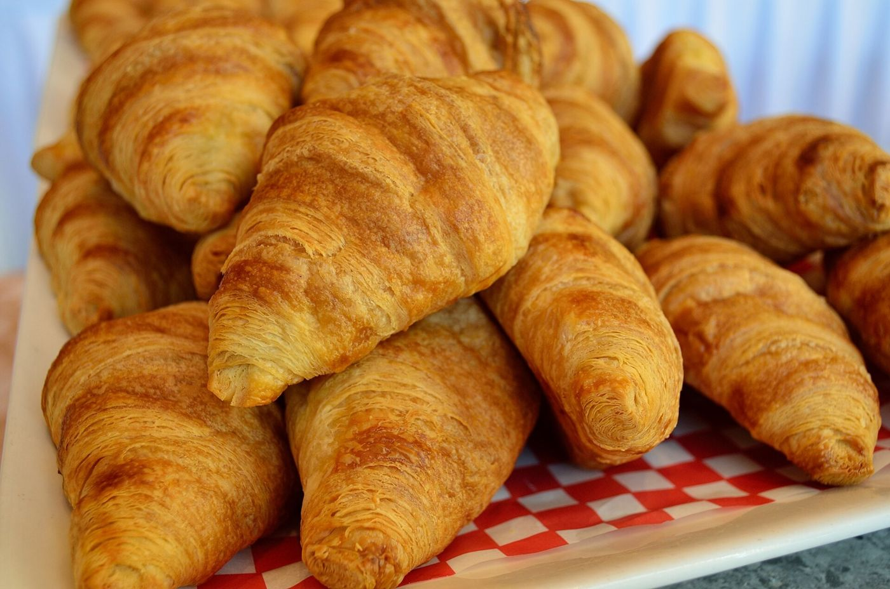
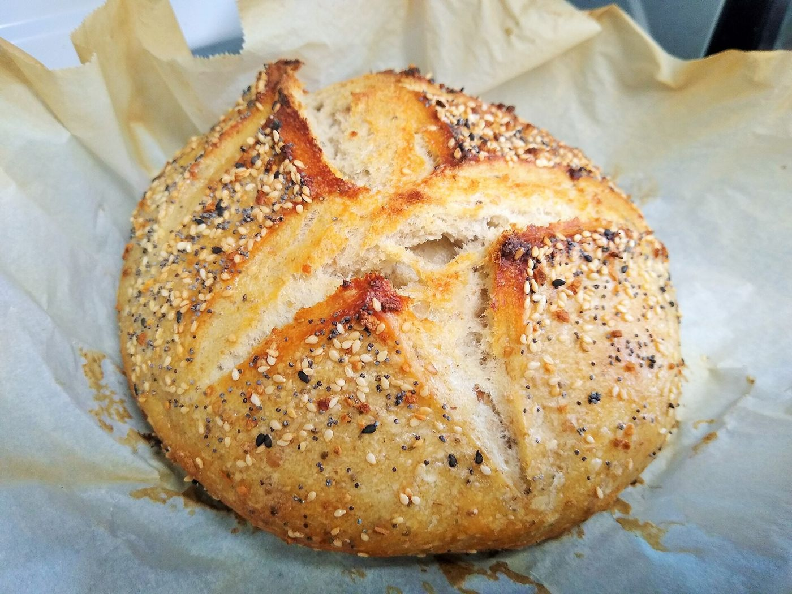
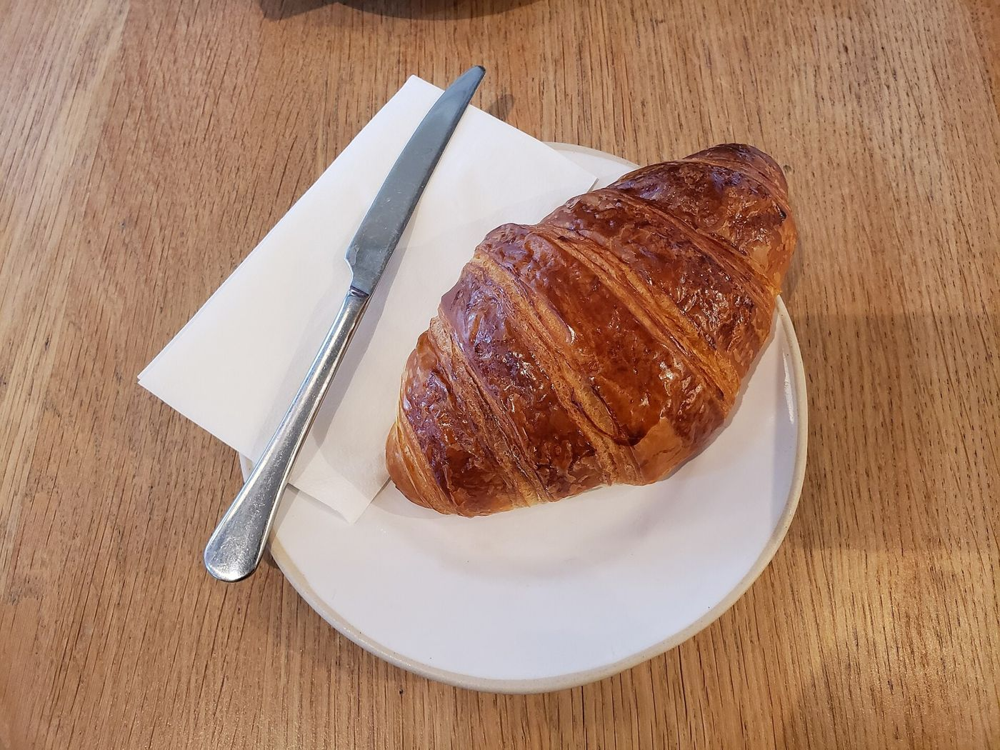
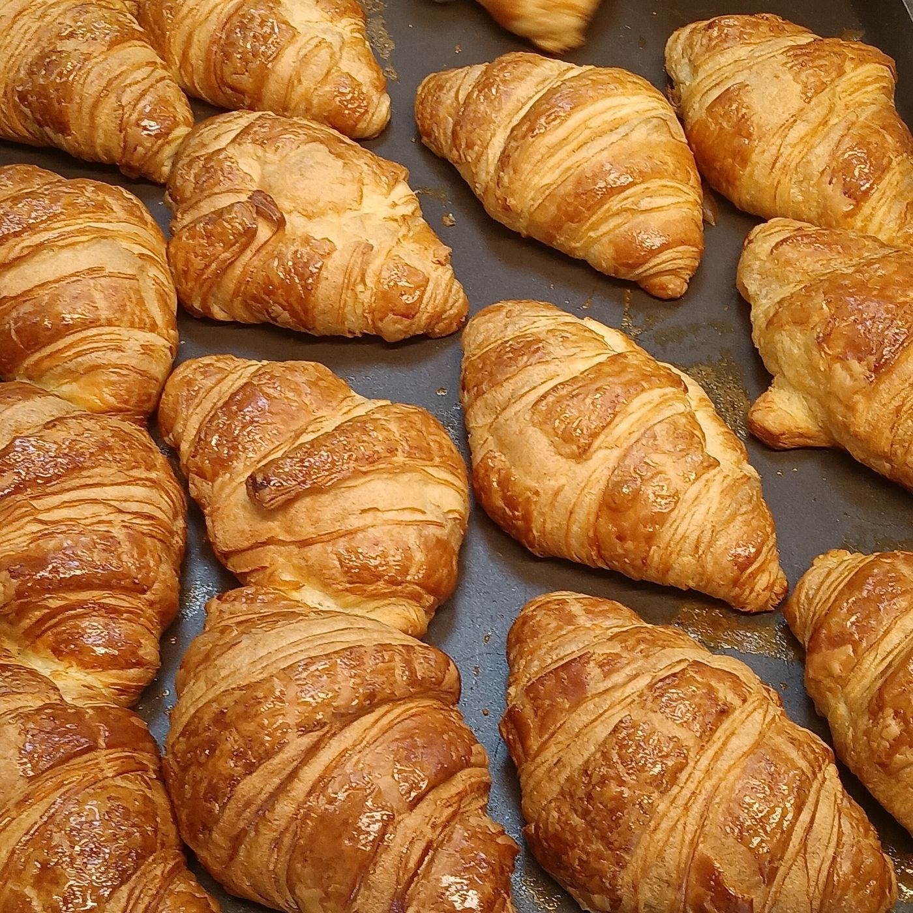
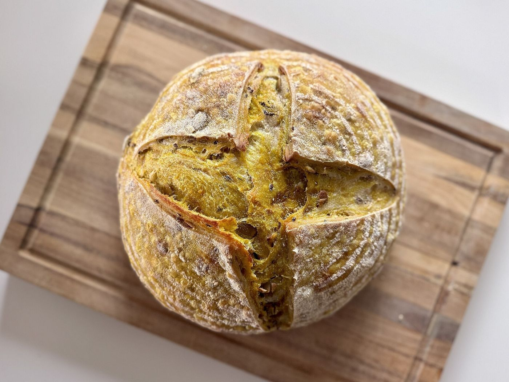

Manchete
Pão quentinho e café para começar o dia
Pães, salgados, doces e lanches para o café da manhã, a pausa da tarde ou para levar.

Sobre
Sobre a padaria
A FCW Bakery 01 é uma padaria para o dia a dia: pães, salgados, doces e café, para consumir no balcão ou levar para casa.
Padaria de todo dia.
Notas
Destaques

- Nota 1
Pães
Fornadas ao longo do dia.
- Nota 2
Salgados
Para o lanche.
- Nota 3
Café da manhã
Opções para começar bem.
- Nota 4
Encomendas
Combine pelo WhatsApp.
Classificados · Cardápio Cardápio ilustrativo
Cardápio
Uma amostra do cardápio. Itens e valores pelo WhatsApp.
Pães e cafés Simulado
- Pão francês — O clássico da padaria
- Pão de forma — Fatiado, para a semana
- Pão de queijo — Porção ou unidade
- Misto quente — Pão, queijo e presunto na chapa
- Coxinha — Salgado frito tradicional
- Sonho — Recheado com creme
- Bolo caseiro — Fatia do dia
- Café coado — Na xícara ou para levar
- Suco natural — Sabor conforme disponibilidade
Serviço · Pedidos
- Chame no WhatsApp.
- Conte o que você procura.
- Combine os detalhes pela conversa.
- Entrega, retirada, encomendas e pagamento
- Consulte pelo WhatsApp
Expediente
Fale com a gente
Horário
Fale com a gente
- WhatsApp: (11) 94790-4394
- Telefone: (11) 94790-4394
Última página
Que tal um café com pão quentinho?
Chame no WhatsApp para encomendas e informações.


